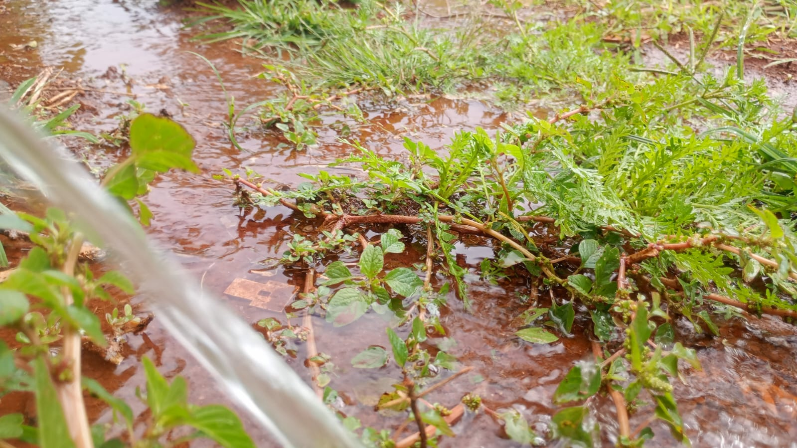

Zona Rural?
Zona rural é um recorte espacial que tem como característica a baixa concentração de pessoas e de edificações, expandindo-se por uma área ampla em que é possível observar trechos pouco alterados pela ação humana, isto é, naturais. Na zona rural se desenvolvem atividades econômicas importantes, como a agropecuária, o extrativismo e a geração de eletricidade, responsáveis pelo fornecimento de alimentos e insumos para a sociedade.
Saiba um pouco mais sobre cada área
